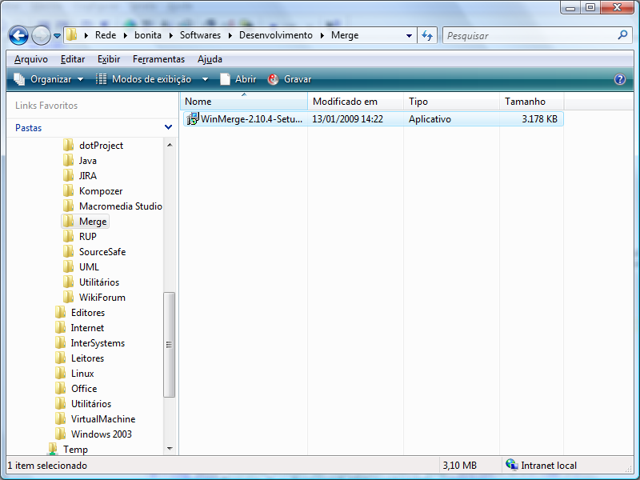
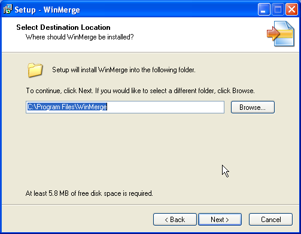
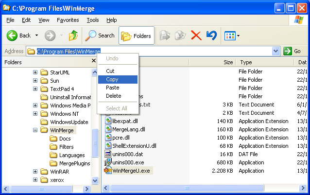
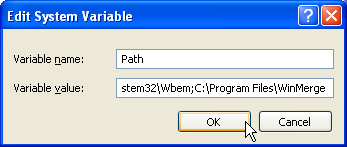
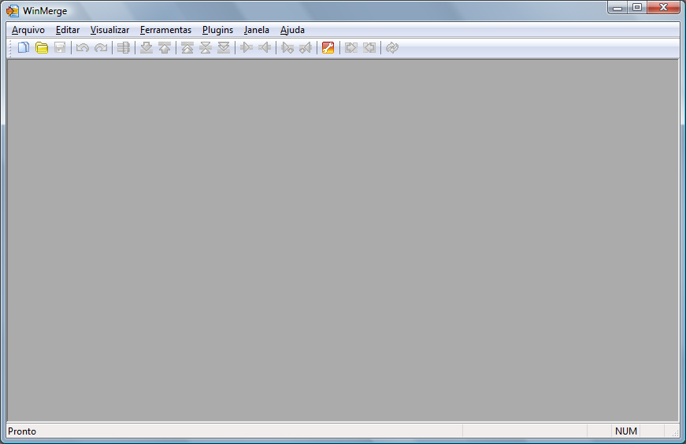
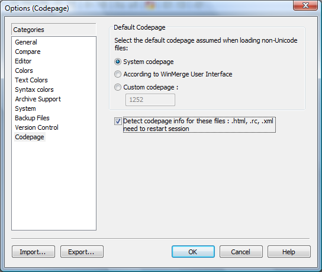

[Documentation Home]
[Installation Home]
Alphalinc Software Development Environment (ASDE) - Winmerge installation
- Go to \\loira\Softwares\Desenvolvimento\Merge
(or download it from http://www.winmerge.org) and copy WinMerge-2.10.4-Setup.exe file to your computer.
|

Figure 1 - Software folder
|
- Double click on the installer and accept the default options. Remember to take a note of the complete
installation directory.
|

Figure 2 - Write down the installation directory
|
- Make sure the plugins are selected.
- Open Windows Explorer and copy to the clipboard
the exact path of WinMerge installation. You will use this value for the PATH environment variable.
In case you forget where this directory is, you just have to search the system for the file
WinMergeU.exe. Example:
C:\Program Files\WinMerge.
|

Figure 4 - How to figure out the WinMerge installation directory
|
- Right click on the "My Computer" icon and choose the menu Properties
|

Figure 5 - Opening the system properties
|
- Click on the Advanced tab, then on the button Environment variables
|

Figure 6 - Environment variables tab
|
- Select the PATH environment variable (from the Systems variable list)
and click on the Edit button.
|

Figure 9 - Preparing to add WinMerge installation path to the system PATH
|
- Scroll to end of text of the Variable value field, add a semicolon ; and
then add the WinMerge installation path plus. It should look like the following figure:
|

Figure 10 - Including WinMerge installation path to the system PATH
|
- When you add or change a system variable, you have to open a new prompt to see its effects. So,
close any old command line prompt windows that are open.
- Open WinMerge program.
|

Figure 11 - WinMerge program
|
- Click the menu "Edit" => "Options" and then click on the "Codepage" item. Select the
"Detect codepage info for these files : .html, .rc, .xml - need to restart session"
option and click the "OK" button to commit changes.
|

Figure 12 - Changing Codepage option
|
Now you can proceed to the next step.
This document is the file projectDirectory/Implementation/docs/installation/winmerge-installation.html
Please feel free to make corrections and commit it to the repository.